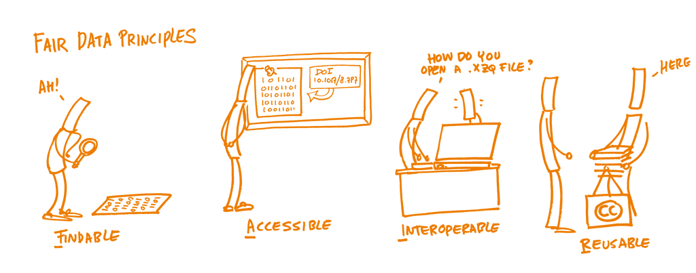

8 Metadata
All data is accompanied by metadata, or data about data and is important to every step in the FAIR principle;
- It makes data Findable by being able to search for certain metadata ‘chunks’.
- Accessibility to the data is determined by or can be found in the metadata.
- It makes data Interoperable so you can have your data operate with other systems, in our case a metadata explorer and our storage/distribution system.
- It describes the data in such a way that you can reliably Re-use the data for your/their own research.

Picture: FAIR principles / Patrick Hochstenbach / CC0 1.0
{kind=link}
8.1 GUTS
The way that data is structured within GUTS results in metadata being present in three different ways.
- In the name of the file (file naming conventions can be found here)
- In the folder location
- In an accompanying file (e.g. a .JSON file)
The table below presents an overview of all data types and where their metadata can be found.
| Data source | Data Type | Metadata | Metadata format |
| EEG data | BioSemi Data Format (.bdf) | Can be found in the name of the file (e.g. sub-guts-eur-001_ses-01_task-name.bdf), or in the folder location (e.g. data/sub-guts0001/eeg/*, meaning a file regarding the anatomical scans), or in an accompanying file with the same name as the original file (e.g. sub-guts-eur-001_ses-01_task-name.json) | Filename, folder location, .json file |
| EEG tasks | E-Prime experiment file (.ebs) | * | * |
| EEG behavioral data | Tabular (.tsv) | Can be found in the name of the file (e.g. xxx), or in an accompanying file with the same name (e.g. xxx). | Filename, .json file |
| MRI scans | NIfTI files (.nii.gz) | Can be found in the name of the file (e.g. sub-guts-eur-001_ses-01_inplaneT2.nii.gz), or in the folder location (e.g. data/sub-guts0001/anat/*, meaning a file regarding the anatomical scans), or in an accompanying file with the same name as the original file (e.g. sub-guts-eur-001_ses-01_inplaneT2.json) | Filename, folder location, .json file |
| fMRI tasks | E-Prime/OpenSesame/Presentation | * | * |
| fMRI behavioral data | NIfTI files (.nii.gz) | Can be found in the name of the file (e.g. sub-guts-eur-001_ses-01_task-name_bold.nii.gz or task-name_events.tsv), or in the folder location (e.g. data/sub-guts0001/func/*, meaning a file regarding the functional scans), or in an accompanying file with the same name as the original file (e.g. sub-guts-eur-001_ses-01_task-name_bold.json) | Filename, folder location, .json file |
| ESM | Tabular (.tsv) | Can be found in the name of the file (e.g. sub-guts-eur-001_ses-01_esmday01.tsv), or in an accompanying file with the same name (e.g. sub-guts0001_ses-1_esmday01.json). | Filename, .json file |
| Questionnaires | Tabular (.tsv) | Can be found in the name of the file (e.g. aiss.tsv), or in an accompanying file with the same name (e.g. aiss.json). | Filename, .json file |
| Hormonal data | Tabular (.tsv) | Can be found in the accompanying file (e.g. x.tsv), or in an accompanying file with the same name (e.g. x.json). | Filename, .json file |
How to create this metadata will be eplained in the page How to convert your data to Yoda standards
8.2 Metadata Explorer
Metadata is shown in the GUTS metadata explorer (currently a prototype version) and is divided in the following ways:
General overview of the data including waves and general description.
Participant information including N, number of dropouts and other general participant information per wave.
Measure overview including measure name, category, description and type per measure and wave.
This explorer will include a search function to find and select variables required for your research. These variables along with certain preset filters (age, wave, gender, etc.) can then be made into a package which and be requested for analysis.